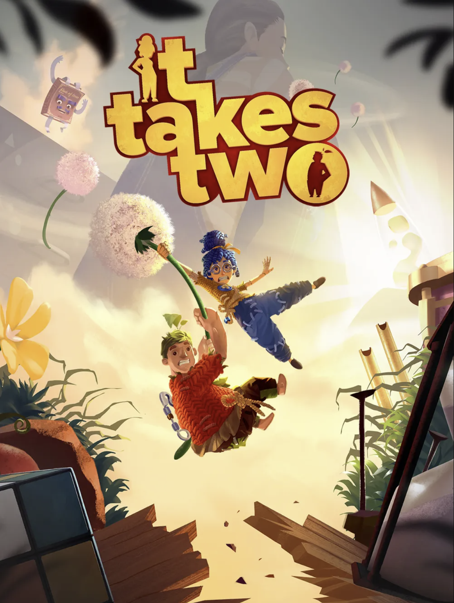

잇 테이크 투

출시일 : 2021년 3월 26일
장르 : 액션 어드벤처, 플랫포머, 코옵
가격 : 44,000원
It Takes Two에서 생애 가장 정신없는 여정을 시작하세요. 친구가 무료로 참가할 수 있게 친구 패스*로 초대하고, 함께 힘을 합쳐서 수많은 유쾌하고 획기적인 게임 플레이 챌린지를 헤쳐나가세요.

기준일:
2024-12-21 |
|
|---|---|
| 메타스코어 89/100 | 유저 평점 8.8/10 |

기준일:
2024-12-21 |
|
|---|---|
| 종합 평가 | 최근 평가 |
| 압도적으로
긍정적(95%) (평가 158,857개) |
압도적으로
긍정적(96%) (평가 4,557개) |
1. 협동 중심의 독창적인 게임플레이
It Takes Two는 두 플레이어가 반드시 협력해야만 진행할 수 있는 퍼즐이다. 각 캐릭터가 서로 다른 능력을 가지고 있어 플레이어 간의 소통과 협력은 필수적이다. 단순한 게임 이상의 팀워크와 유대감을 형성하는 데 도움을 준다.
2. 다채로운 챕터, 미니게임
격투, 슈팅, 레이싱, 리듬 등 다양한 장르의 게임을 합쳤음에도 이질감 없이 잘 녹여냈으며, 적절한 게임 난이도 덕분에 누구나 즐길 수 있게 설계되었다.
3. 감동적이고 몰입감 있는 스토리
이혼 위기에 처한 부부가 동화같은 여정을 통해 관계를 회복해가는 이야기는 감동적이면서도 유쾌하다. 현실적인 갈등을 판타지 세계의 모험과 결합하여 깊은 메시지를 전달하면서도, 너무 무겁지 않게 다룬다. 플레이를 통해 캐릭터의 성장과 관계 변화를 경험하며 진정성 있는 서사를 즐길 수 있다.
4. 2021년 올해의 게임(Game of the Year, GOTY) 선정
It Takes Two는 두 플레이어가 반드시 협력해야만 진행할 수 있는 퍼즐이다. 각 캐릭터가 서로 다른 능력을 가지고 있어 플레이어 간의 소통과 협력은 필수적이다. 단순한 게임 이상의 팀워크와 유대감을 형성하는 데 도움을 준다.
2. 다채로운 챕터, 미니게임
격투, 슈팅, 레이싱, 리듬 등 다양한 장르의 게임을 합쳤음에도 이질감 없이 잘 녹여냈으며, 적절한 게임 난이도 덕분에 누구나 즐길 수 있게 설계되었다.
3. 감동적이고 몰입감 있는 스토리
이혼 위기에 처한 부부가 동화같은 여정을 통해 관계를 회복해가는 이야기는 감동적이면서도 유쾌하다. 현실적인 갈등을 판타지 세계의 모험과 결합하여 깊은 메시지를 전달하면서도, 너무 무겁지 않게 다룬다. 플레이를 통해 캐릭터의 성장과 관계 변화를 경험하며 진정성 있는 서사를 즐길 수 있다.
4. 2021년 올해의 게임(Game of the Year, GOTY) 선정